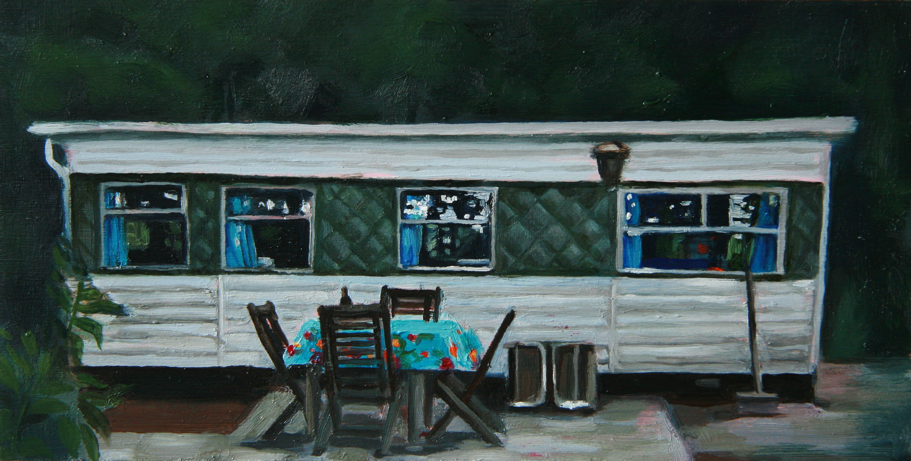
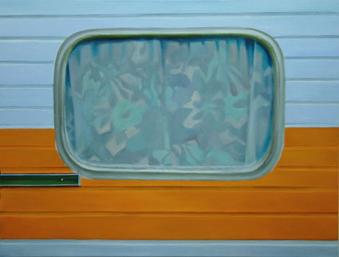
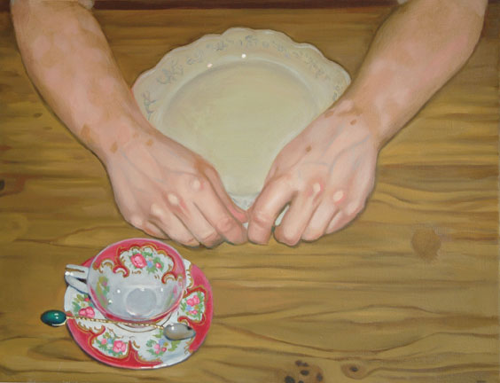
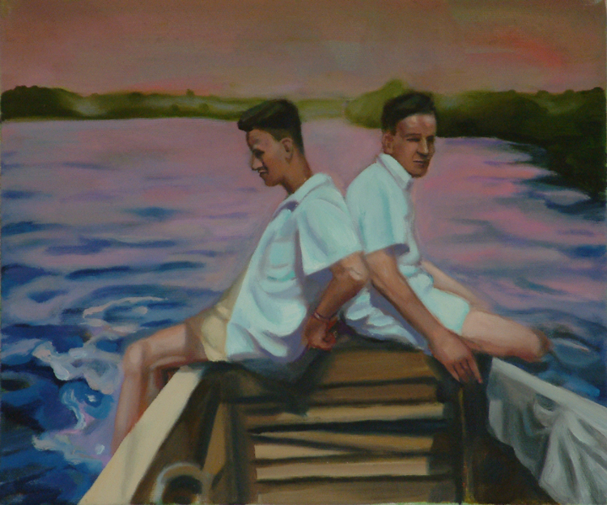
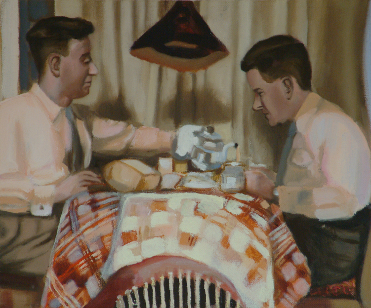
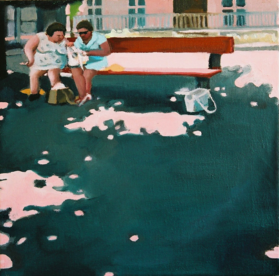
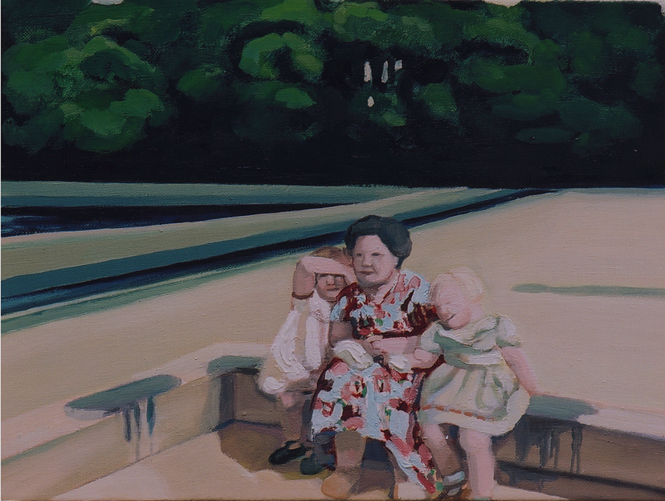
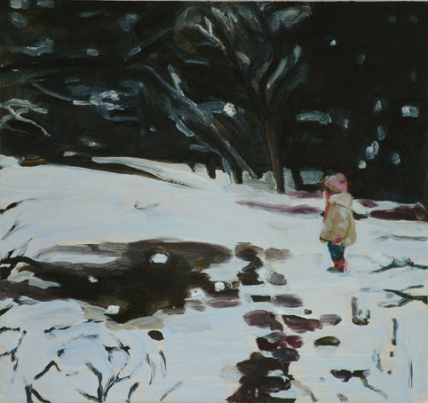

Distelloo, olieverf op paneel 120cm x 220cm, 2018

De aardappelschiller, olieverf op paneel, 30cm x 40cm, 2018

Olieverf op hout en lijst, 41cm x 41cm, 2017
Scroll naar beneden voor meer schilderijen.
Meer achtergronden, informatie en filmpjes over dit thema Hoofdstuk 5 van In Tussentijd, klik hier

Paard op Distelloo (op paarse muur), olieverf op paneel, 45cm x 23,5cm, 2015


Het woud der verwachting 1 en 2, olieverf op paneel, 14cm x 23cm 2015

Lunch Distelloo, olieverf op paneel, 22cm x 29cm, 2015

Klein paard, olieverf op paneel, 22cm x 29cm, 2015

Het enge bos, 23cm x 31cm, 2014

Het enge bos-2, olieverf op paneel, 23cm x 31cm, 2014

Caravan, olieverf op paneel, 13cm x 26cm, 2014

Tonny's caravan, olieverf op doek, 60cm x 60cm, 2002

Raamwerk, olieverf op doek, 80cm x 100cm, 2005

Vitiligo in paradise, olieverf op doek, 50cm x 60cm, 2005

Vitiligo stilleven, 40cm x 50cm, olieverf op doek, 2005

Broers, olieverf op doek, 25cm x 30cm, 2002

Koppel, olieverf op doek, 25cm x 30cm, 2002

De student, olieverf op doek, 50cm x 65cm, 2002

Nobody to play with, 50cm x 50cm, olieverg op doek, 1998.

De autohandelaar, olieverf op doek, 40cm x 50cm, 1999

Z.t. olieverf op doek, 70cm x 95cm, 1999

Hele dagen in de bomen, olieverf op doek, 75cm x 75cm, 2000

Vakantie. 130cm x 160cm, olieverf op doek, 1997.

Familie voor berg. olieverf op doek, 50cm x 60cm, 1999.

Lu en Grada. 30cm x 30cm, olieverf op doek, 1998.

Lu en Gerard, 30cm x 40cm en Grada en Freek, olieverf op doek, 25cm x 30cm, 1998

De fatsoenlijke familie, 113cm x 118cm, olieverf op doek, 1998

Z.t., olieverf op doek, 60cm x 70cm, 1997

Z.t. olieverf op paneel, 25cm x 20cm, 1997

Zwembad, 30cm x 40cm, olieverf op doek, 2002

Zwembad 2. olieverf op doek, 50cm x 60cm, 2004

Alice in wonderland, 30cm x 40cm, olieverf op doek, 2005

Distelloo, 25cm x 25cm, olieverf op paneel, 2004

Z.t. 80cm x 80cm, olieverf op doek, 2005

Z.t. olieverf op doek, 60cm x 80cm, 2005

Keep on walking. 30cm x 40cm, olieverf op doek, 2004